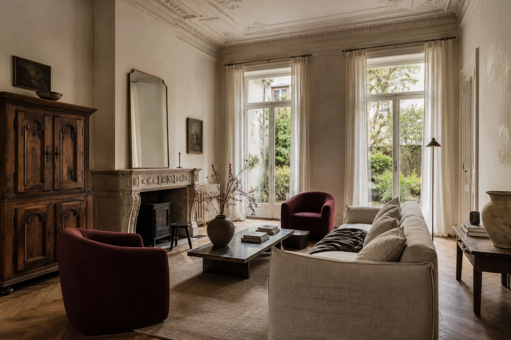

Principal suite
Garden-facing bedroom, adjoining dressing room and private limestone bathroom.
A private house in the heart of the city
A restored 1898 townhouse,
available for a new chapter.
The residence
Set behind a late-nineteenth-century façade on Ghent’s tree-lined Coupure, Maison Éloise is a rare furnished residence where original detail and modern comfort exist in quiet balance.
Restored mouldings, oak floors and tall French windows meet a considered collection of Belgian antiques and contemporary pieces. The house unfolds across three levels, ending in a secluded city garden.

The garden floor
Morning light moves through the salon and dining room before opening onto the walled garden. Generous proportions invite both quiet evenings and tables full of company.
“A home with the grace of its history and none of its inconvenience.”
The particulars
Garden-facing bedroom, adjoining dressing room and private limestone bathroom.
Quiet upper-floor rooms with built-in storage and a shared shower room.
A considered mix of contemporary Belgian design, antiques, lighting and art.
Underfloor heating, integrated appliances, laundry, alarm and high-speed internet.
A walled 68 m² garden with mature planting, dining terrace and bicycle access.
Monthly housekeeping and seasonal garden care can be arranged on request.
Coupure · 9000 Gent
The Coupure follows one of Ghent’s oldest canals: green, residential and an easy walk from the historic centre. Bakeries, neighbourhood restaurants and the university quarter are all close at hand.
Private viewings by appointment